2025-03-12 09:29
_Status: flashcard_zero riscritto_zero revisione_zero
_Tags:
fisica1- Ese08
Esercizio 4.23: Due corpi collegati tramite carrucola
Descrizione del Problema
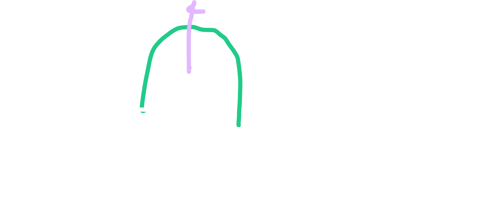 Due corpi di massa kg e kg sono fissati alle estremità di una fune inestensibile che appoggia su una carrucola di massa trascurabile. Alla carrucola è applicata una forza diretta verso l’alto. Trascurando gli attriti e ipotizzando che la fune sia tesa, si chiede di calcolare:
- La massima intensità della forza per cui la massa rimane a contatto con il suolo.
- L’accelerazione della massa in corrispondenza di tale forza .
La carrucola ha massa trascurabile, il che implica che la tensione è uguale in tutti i punti della fune. Una fune tira, non spinge, e per agire deve essere tesa.
Diagramma delle Forze e Sistema di Riferimento
Si considerano i tre corpi: la massa , la massa , e la carrucola. Si sceglie un sistema di riferimento con l’asse verticale orientato verso l’alto, considerando positiva la forza .
- Corpo 1 ():
- 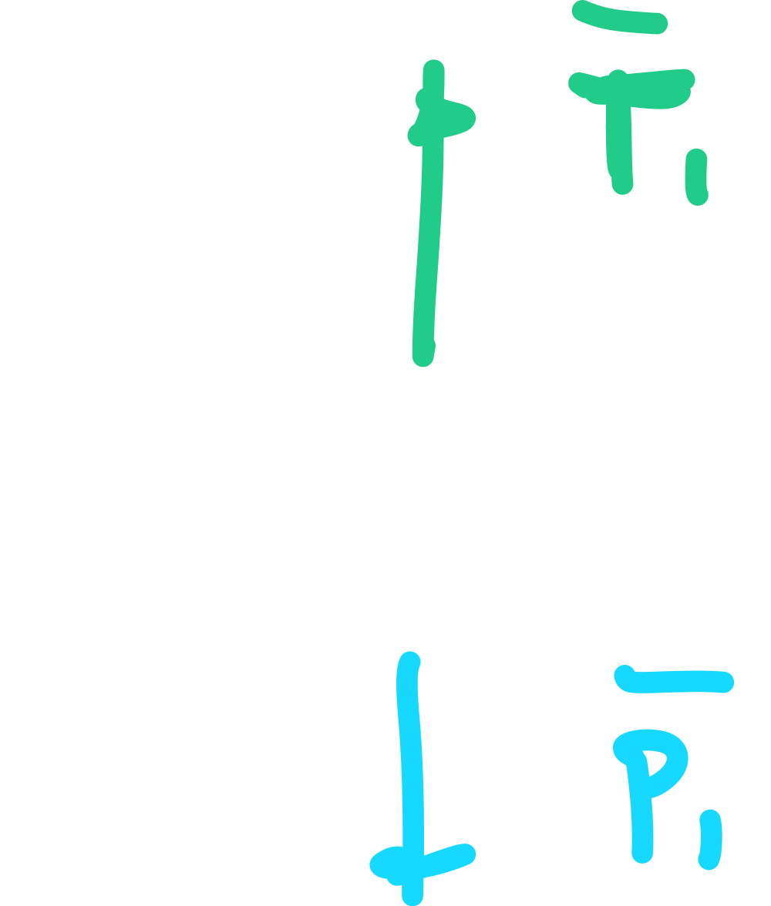
- Forza peso: (diretta verso il basso, quindi negativa nel nostro sistema di riferimento).
- Tensione della fune: (diretta verso l’alto, quindi positiva).
- Corpo 2 ():
- 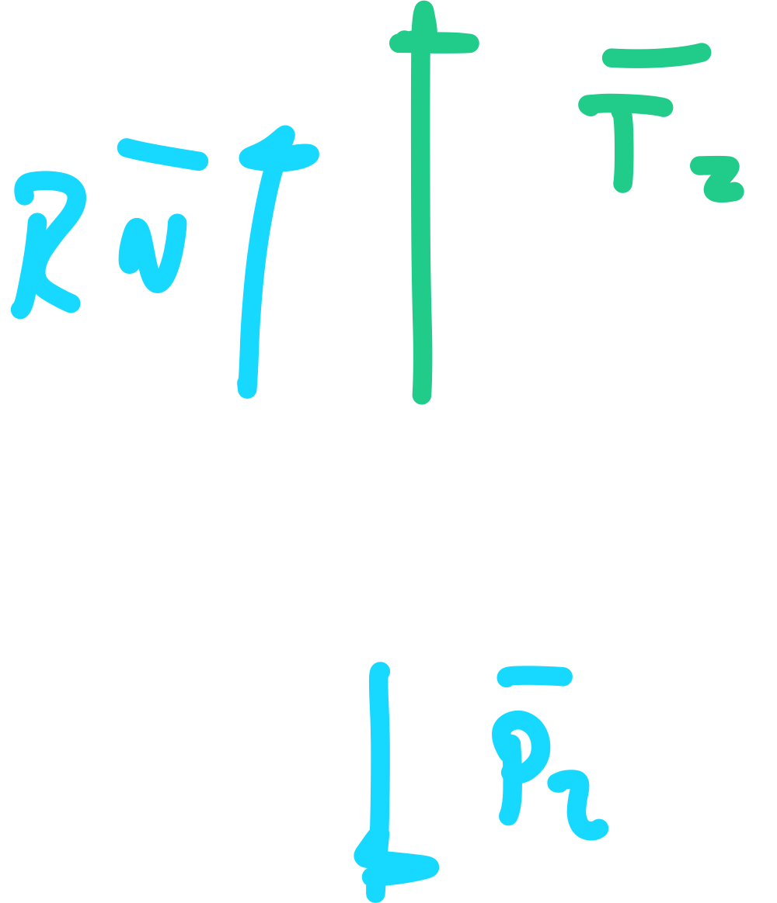
- Forza peso: (diretta verso il basso, quindi negativa).
- Tensione della fune: (diretta verso l’alto, quindi positiva).
- Reazione normale del suolo: (diretta verso l’alto, quindi positiva). Questa forza agisce solo finché il corpo rimane a contatto con il suolo.
- Carrucola (massa trascurabile):
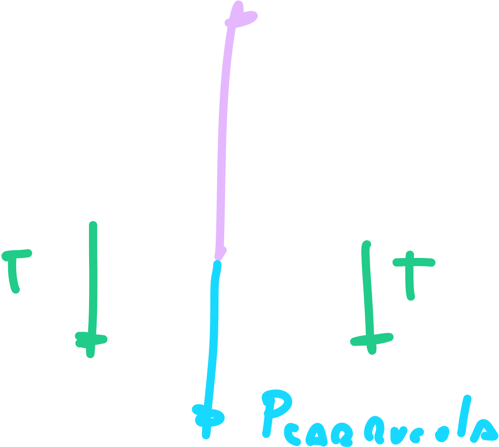
- Forza applicata: (diretta verso l’alto, quindi positiva).
- Tensione della fune (due tratti che tirano verso il basso): e (negative).
- Forza peso della carrucola: (perché la massa è trascurabile).
Equazioni della Dinamica
Applicando la seconda legge di Newton () per ciascun corpo:
-
Corpo 1 (): dove è l’accelerazione della massa (positiva se diretta verso l’alto).
-
Corpo 2 (): Il problema specifica che rimane a contatto con il suolo, quindi la sua accelerazione . L’equazione diventa:
-
Carrucola (massa trascurabile): Da cui si ottiene la relazione tra la forza applicata e la tensione:
Condizione per a Contatto con il Suolo
La condizione affinché la massa rimanga a contatto con il suolo è che la reazione normale sia maggiore o uguale a zero: Il valore limite per il distacco si ha quando .
Dall’equazione per con , abbiamo:
Imponendo :
Calcolo della Forza Massima
Utilizzando la relazione trovata per la carrucola (), la condizione sulla tensione si traduce in una condizione sulla forza:
La massima intensità della forza per cui rimane a contatto con il suolo è quindi:
Sostituendo il valore di kg e : Il professore indica che il risultato è 294 N.
Calcolo dell’Accelerazione di in Corrispondenza di
Quando , abbiamo .
Sostituiamo questo valore di nell’equazione della dinamica per :
Risolvendo per l’accelerazione :
Sostituendo i valori di kg e kg:
Utilizzando :
L’accelerazione di è diretta verso l’alto perché il risultato è positivo nel nostro sistema di riferimento.
Osservazioni del Professore
Il professore sottolinea l’importanza di isolare i corpi, fare il diagramma delle forze e scegliere un sistema di riferimento opportuno. Nel contesto di questo problema, tutto si svolge lungo la direzione verticale.
Riguardo alla condizione di contatto con il suolo, il professore spiega che tradurre la frase “rimane a contatto con il suolo” nell’equazione o disequazione è fondamentale. Il caso limite () corrisponde al valore massimo della forza.
Infine, il professore fa notare che l’accelerazione di è costante, il che implica un moto accelerato fino a quando la corda non finisce o raggiunge la carrucola.
Spiegazione dell’Esercizio 4.24
Introduzione al Problema
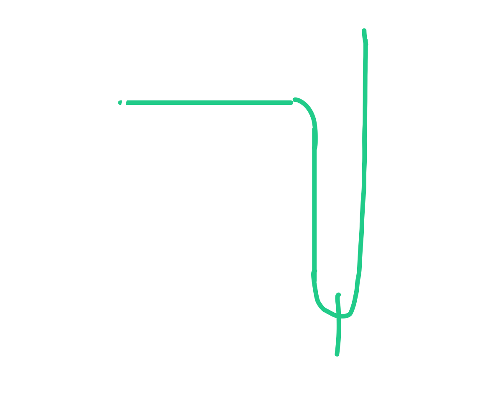 Il professore introduce l’esercizio 4.24, che coinvolge due masse ( e ) collegate da una fune inestensibile. La fune ha un’estremità fissata al soffitto e passa attraverso due carrucole di massa trascurabile: una fissa () e una mobile (). La massa si trova su un piano orizzontale liscio (senza attrito), mentre la massa pende verticalmente. L’obiettivo è calcolare le accelerazioni delle due masse e, come aggiunge il professore, le tensioni della fune ( e ).
Analisi Cinematica della Fune
Il professore sottolinea l’importanza di capire la relazione tra le accelerazioni delle due masse a causa del vincolo imposto dalla fune inestensibile e dalla carrucola mobile. Per fare ciò, esegue un’analisi cinematica della fune.
Considerando un sistema di riferimento con come la coordinata orizzontale di e come la coordinata verticale di (con verso positivo verso il basso), la lunghezza totale () della fune, che è costante, può essere espressa come la somma di diversi segmenti:
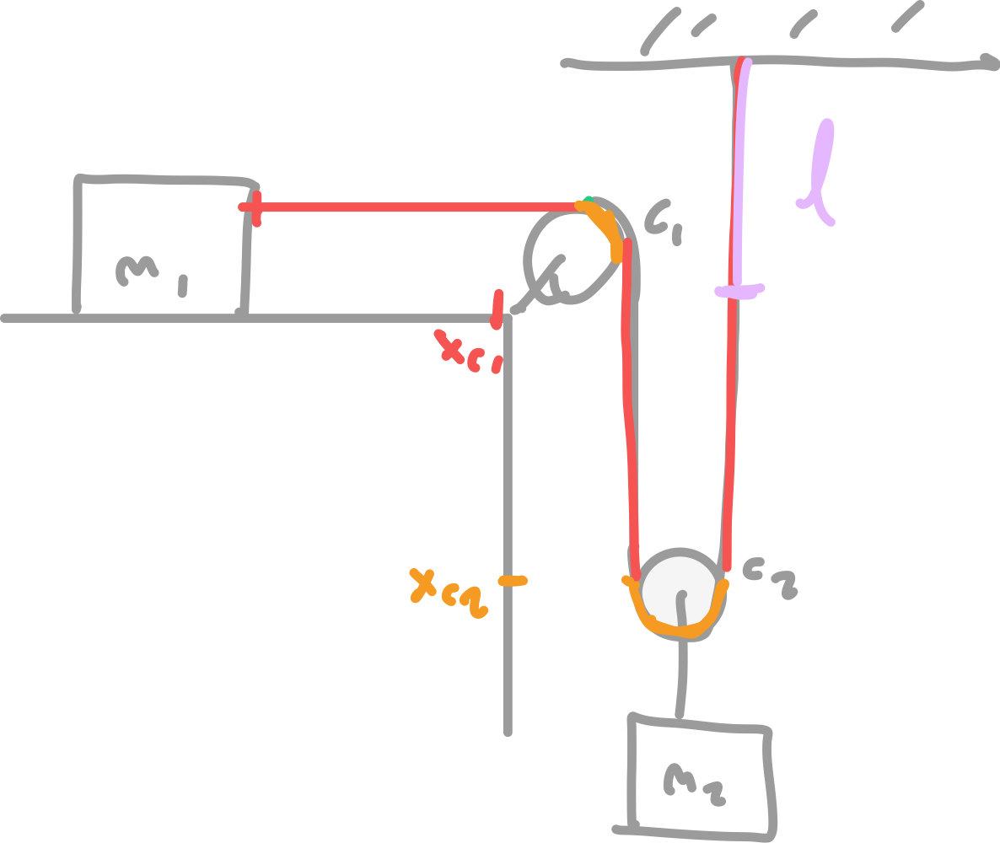
Dove:
- è la coordinata di .
- è un quarto della circonferenza della carrucola fissa (un termine costante).
- è la coordinata verticale della carrucola mobile .
- è metà della circonferenza della carrucola mobile (un termine costante).
- rappresenta la lunghezza costante del tratto di fune tra la carrucola fissa e il punto di attacco al soffitto.
Poiché la lunghezza è costante, la sua derivata rispetto al tempo è zero. Derivando due volte l’espressione per rispetto al tempo, e considerando che l’accelerazione della carrucola mobile è la stessa dell’accelerazione della massa (), si ottiene la relazione tra le accelerazioni:
Da cui:
Quindi, l’accelerazione del corpo 1 () è il doppio e in verso opposto all’accelerazione del corpo 2 (). Se si considera il verso positivo di verso destra e il verso positivo di verso il basso, allora:
Il segno negativo indica che se accelera verso il basso (), allora accelera verso sinistra (), e viceversa. Il professore spiega che uno spostamento di comporta uno spostamento di della carrucola mobile e quindi di .
Diagramma delle Forze
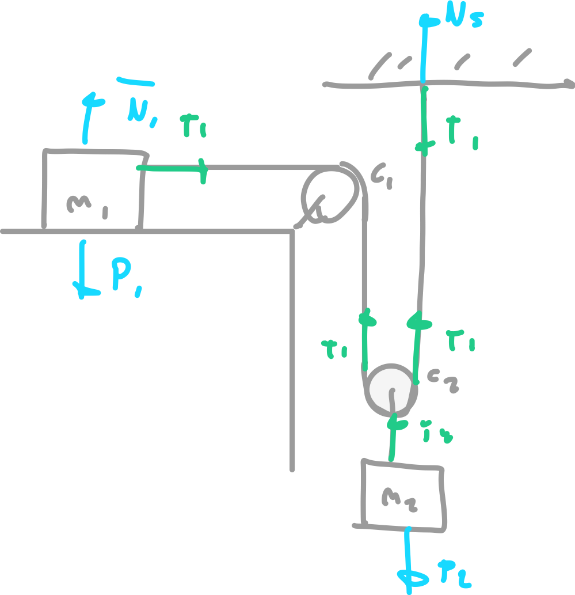 Il professore procede a disegnare e analizzare le forze agenti su ciascun corpo:
-
Massa :
- Forza peso: (verticale verso il basso).
- Reazione normale del piano: (verticale verso l’alto). Questa forza bilancia il peso di in direzione verticale e non influenza il moto orizzontale.
- Tensione della fune: (orizzontale verso sinistra, poiché la fune tira ).
-
Massa :
- Forza peso: (verticale verso il basso).
- Tensione della fune: (verticale verso l’alto, poiché la fune tira ).
-
Carrucola Mobile (massa trascurabile):
- Tensione della fune: Due segmenti di fune esercitano una tensione ciascuno verso l’alto.
- Tensione della fune: Un segmento di fune esercita una tensione verso il basso.
Applicazione della Seconda Legge di Newton
Il professore applica la seconda legge di Newton () a ciascun corpo lungo le direzioni del moto:
-
Massa (moto orizzontale):
-
Massa (moto verticale):
-
Carrucola Mobile (massa trascurabile): Poiché la massa della carrucola è trascurabile, la risultante delle forze su di essa deve essere zero:
Risoluzione del Sistema di Equazioni
Si ha un sistema di quattro equazioni con quattro incognite (, , , ):
Il professore mostra i passaggi per risolvere questo sistema:
Sostituendo l’equazione 4 nella 1:
Sostituendo l’equazione 3:
Sostituendo l’espressione per nell’equazione 2:
Risolvendo per :
Risultati per l’Accelerazione
L’accelerazione della massa è:
Utilizzando la relazione cinematica , l’accelerazione della massa è:
Risultati per la Tensione
Sostituendo l’espressione per nelle equazioni per le tensioni, si ottiene:
Tensione :
Tensione :
Il professore invita a verificare a casa i risultati ottenuti risolvendo il sistema di equazioni.
Ulteriori Considerazioni ed Esempi
Il professore menziona come il principio della carrucola mobile possa essere esteso per creare un sistema di carrucole utilizzato da Archimede per sollevare grandi pesi. Ogni carrucola mobile aggiuntiva riduce ulteriormente l’accelerazione e la forza necessaria per sollevare un carico.
Come esempio, propone di analizzare un sistema con più carrucole, suggerendo che in una configurazione specifica si potrebbe raggiungere l’equilibrio () quando . Questo significa che una massa può equilibrare una massa quattro volte più grande grazie al vantaggio meccanico fornito dal sistema di carrucole . Il professore conclude invitando a provare a risolvere un sistema di carrucole più complesso come esercizio .
Certamente. Ripercorriamo la spiegazione del professore sull’esercizio 3, integrando i passaggi matematici e fornendo una struttura chiara con titoli e sottotitoli.
Esercizio sul Sistema di Masse Senza Attriti
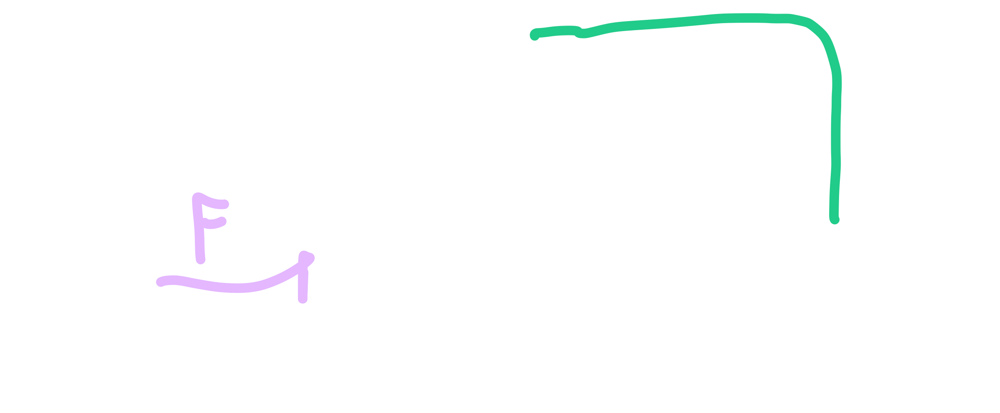 Descrizione del Problema
Si considera un sistema composto da una massa appoggiata su una superficie orizzontale priva di attrito. Sopra questa massa è appoggiata una massa . Una carrucola è fissata alla massa , e una fune ideale, anch’essa priva di massa, collega la massa a una massa che pende verticalmente. Una forza costante è applicata orizzontalmente alla massa . L’obiettivo è determinare il valore della forza tale che le masse e rimangano ferme rispetto alla massa .
Comprensione del Fenomeno Fisico
Il professore introduce il problema sottolineando l’assenza di attriti nel sistema. Per aiutare a visualizzare la situazione, propone un esperimento mentale: se la forza fosse zero (ovvero se il corpo fosse fermo), le masse e , a causa della gravità e dell’assenza di attrito, scivolerebbero inevitabilmente. L’idea è che, applicando una forza opportuna a , si possa indurre un’accelerazione tale che le masse e rimangano in equilibrio relativo rispetto a .
Viene fornito un esempio analogico: immaginare di essere in auto su un sedile di ghiaccio. Se l’auto è ferma, si scivola. Tuttavia, se l’auto sta accelerando, si viene schiacciati contro il sedile e, in qualche modo, si potrebbe rimanere in equilibrio relativo.
Diagramma delle Forze 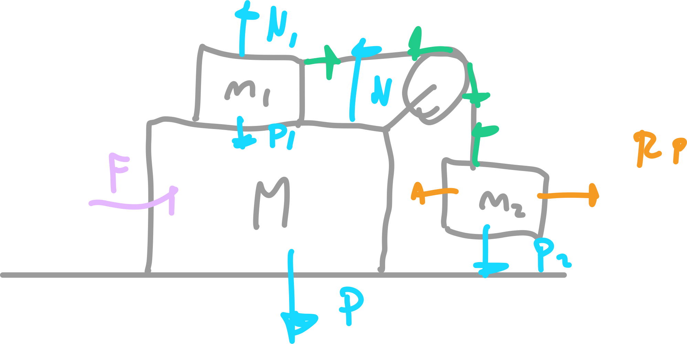 Per risolvere il problema, è fondamentale analizzare le forze agenti su ciascun corpo. Il professore procede a disegnare il diagramma delle forze per le masse , e , e per la carrucola (considerando la carrucola e come un unico sistema per alcune forze).
-
Massa :
- Forza esterna applicata: (orizzontale)
- Forza peso: (verticale verso il basso)
- Reazione vincolare del suolo: (verticale verso l’alto)
- Reazione parallela dovuta al contatto con : (orizzontale, verso sinistra, esercitata da su )
- Tensione della fune: (orizzontale, verso sinistra, applicata alla carrucola, e quindi indirettamente a )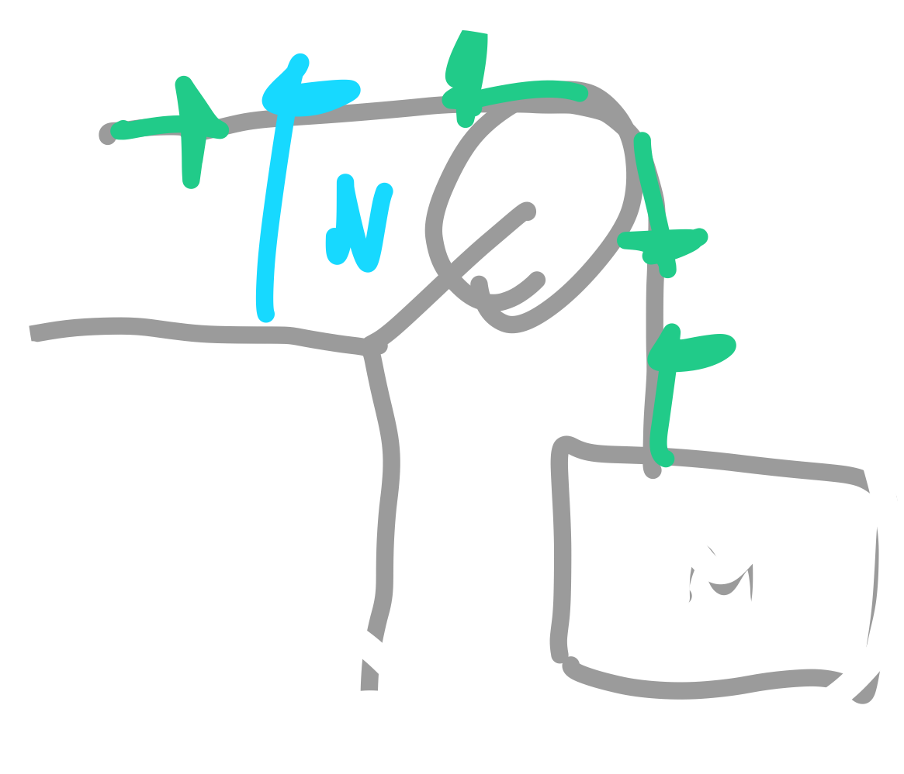
-
Massa :
- Forza peso: (verticale verso il basso)
- Reazione vincolare di su : (verticale verso l’alto)
- Reazione parallela dovuta al contatto con : (orizzontale, verso destra, esercitata da su )
- Tensione della fune: (orizzontale, verso destra)
-
Massa :
- Forza peso: (verticale verso il basso)
- Tensione della fune: (verticale verso l’alto)
Imposizione della Condizione di Equilibrio Relativo
La condizione affinché le masse e siano ferme rispetto a è che tutti i corpi del sistema abbiano la stessa accelerazione. Indichiamo questa accelerazione comune con (diretta orizzontalmente verso destra, nella direzione della forza ).
Scrittura delle Equazioni della Dinamica
Applichiamo la seconda legge di Newton () a ciascun corpo, considerando solo le componenti orizzontali rilevanti per il moto e l’equilibrio relativo.
-
Massa (componente orizzontale): La forza orizzontale agente su è la tensione della fune e la reazione parallela esercitata da . Però, considerando il sistema nel suo complesso, la condizione di equilibrio relativo si traduce in un’unica accelerazione orizzontale . Quindi: Il professore inizialmente scrive solo , suggerendo implicitamente che la reazione sia la forza che causa l’accelerazione di insieme alla tensione.
-
Massa (componente verticale): Poiché deve rimanere ferma rispetto a (nella direzione orizzontale), la tensione nella fune deve bilanciare il suo peso per quanto riguarda la relazione con tramite la carrucola. Tuttavia, l’accelerazione del sistema influenza la tensione. Considerando che la lunghezza della fune non cambia, l’accelerazione orizzontale di implica una “pseudo-forza” che influenzerà l’equilibrio verticale apparente di rispetto a . Però, il professore impone direttamente l’equilibrio verticale per determinare la tensione: Questo perché se è ferma rispetto a , la sua accelerazione verticale è zero nel sistema di riferimento di . Nel sistema di riferimento inerziale, la sua accelerazione orizzontale è .
Successivamente, introduce la reazione agente su dovuta al contatto con : Questa forza è la reazione alla forza che esercita su .
-
Massa (componente orizzontale): Le forze orizzontali agenti su sono la forza applicata , la reazione parallela esercitata da , e la tensione esercitata dalla fune (tramite la carrucola): Il professore sottolinea l’importanza di considerare la tensione applicata anche a tramite la carrucola.
Risoluzione del Sistema di Equazioni
Ora abbiamo un sistema di tre equazioni con tre incognite (, , ):
- , dove
Dalle prime due equazioni, possiamo uguagliare le espressioni per la tensione : Da cui si ricava l’accelerazione comune del sistema:
Ora sostituiamo le espressioni per , , e nella terza equazione:
Ora isoliamo la forza :
Possiamo raccogliere il termine :
Per rendere l’espressione più compatta, possiamo mettere in evidenza nei primi due termini:
Oppure, mettendo in evidenza da tutti i termini (come fatto dal professore, con una piccola imprecisione iniziale):
Verifica dei Passaggi Algebrici (Chiarimento del Professore)
Il professore ripercorre i passaggi per chiarire come si arriva al risultato finale: Dall’equazione per :
Si vuole riscrivere in una forma più compatta. Si può notare che ogni termine contiene . Raccogliendo :
Ora, per far apparire il termine come fattore comune, si può moltiplicare e dividere l’ultimo termine () per :
Sostituendo questo nell’espressione per :
Ora si può raccogliere il fattore comune :
Questo è il risultato finale ottenuto dal professore.
Osservazioni Finali sull’Esercizio
Il professore conclude sottolineando che la chiave per risolvere questo problema era imporre che tutte le masse avessero la stessa accelerazione orizzontale. In un contesto di sistemi di riferimento relativi (che sarebbe affrontato in seguito), questa accelerazione si tradurrebbe in condizioni di statica apparente per le masse e rispetto al sistema accelerato . L’esercizio illustra come l’applicazione della seconda legge di Newton e la corretta analisi delle forze, unitamente alla comprensione del vincolo cinematico (stessa accelerazione), portino alla soluzione del problema.
Forza Elastica e Combinazioni di Molle (Esercizio 437)
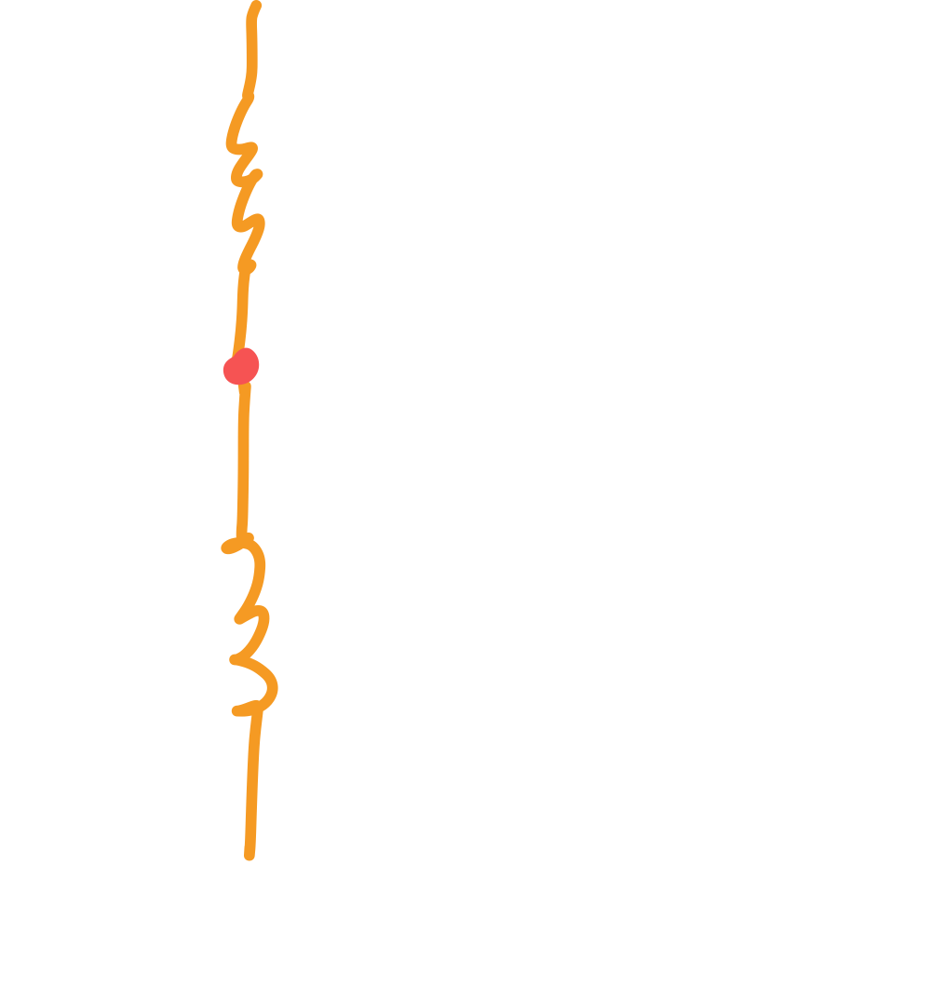
Forza Elastica
Una molla è un elemento meccanico che, se deformato dalla sua lunghezza a riposo , esercita una forza elastica di richiamo. L’intensità di questa forza è direttamente proporzionale all’allungamento della molla, secondo la legge di Hooke:
dove è la costante elastica della molla, che misura la sua rigidità. L’allungamento è la differenza tra la lunghezza attuale della molla e la sua lunghezza a riposo.
In forma vettoriale, introducendo un sistema di riferimento con asse e considerando la coordinata dell’estremo della molla, la forza elastica può essere espressa come:
Questo significa che se la molla è allungata (), la forza è di richiamo e diretta nel verso opposto all’allungamento. Se la molla è compressa (), la forza spinge e ha lo stesso verso dell’accorciamento. In alcuni casi, la lunghezza a riposo può essere considerata trascurabile, semplificando l’espressione.
Combinazioni di Molle: Serie e Parallelo
Quando più molle sono collegate tra loro, possono formare configurazioni in serie o in parallelo. Queste configurazioni si ritrovano in diversi ambiti della meccanica e dell’elettromagnetismo.
Molle in Serie
In una configurazione in serie, le molle sono collegate una di seguito all’altra. Consideriamo l’esercizio 437 come spunto, dove inizialmente si ha un corpo di massa collegato al soffitto mediante due molle con costanti elastiche e disposte in serie.
Per analizzare le forze in gioco, consideriamo le molle e la massa come corpi separati in una situazione statica: 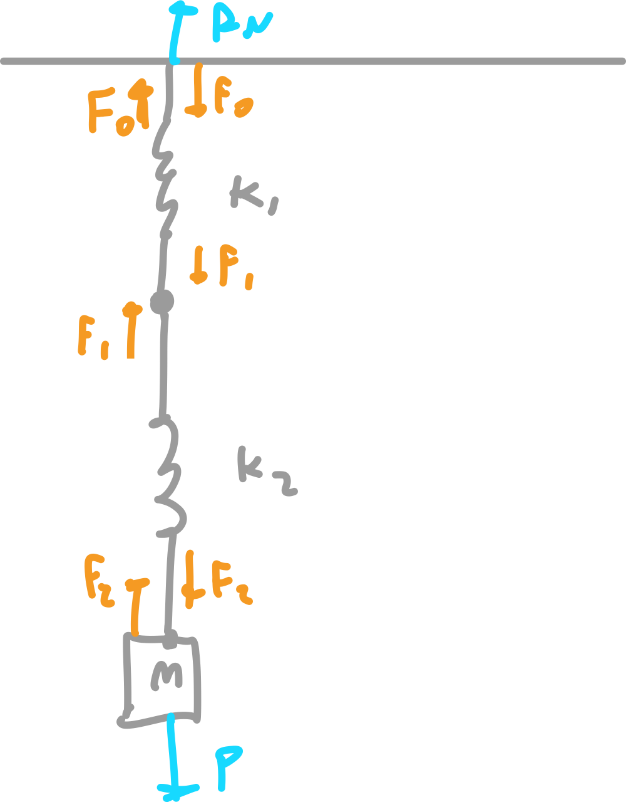
- Il soffitto esercita una forza sulla molla superiore (), che a sua volta esercita una forza uguale e contraria sul soffitto (terzo principio della dinamica).
- La molla superiore () esercita una forza sulla molla inferiore (), e per il terzo principio, la molla inferiore esercita una forza uguale e contraria sulla molla superiore.
- La molla inferiore () esercita una forza sulla massa , e per il terzo principio, la massa esercita una forza uguale e contraria sulla molla inferiore.
- Sulla massa agisce anche la forza peso diretta verso il basso.
Se le masse delle molle sono trascurabili, per la seconda legge di Newton, la forza netta su ciascuna molla deve essere zero in condizioni statiche. Questo implica che la forza si trasmette inalterata attraverso le molle in serie:
All’equilibrio statico, la forza esercitata dalla molla inferiore sulla massa deve bilanciare la forza peso:
Quindi, per molle in serie, la forza che attraversa ciascuna molla è la stessa e uguale alla forza esterna applicata al sistema (in questo caso, la forza peso).
L’allungamento totale del sistema di molle in serie () è la somma degli allungamenti delle singole molle ( e ):
L’allungamento di ciascuna molla è legato alla forza che la attraversa e alla sua costante elastica:
Poiché (dove è la forza equivalente esercitata dal sistema combinato), possiamo scrivere l’allungamento totale come:
Se consideriamo il sistema delle due molle in serie come un’unica molla equivalente con costante elastica , l’allungamento totale sarebbe:
Uguagliando le due espressioni per , otteniamo la relazione per la costante elastica equivalente di molle in serie:
In generale, per molle in serie, la costante elastica equivalente è data da:
Il professore conclude che l’allungamento totale del sistema di molle in serie è la somma delle elongazioni delle singole molle, e per trovare la molla equivalente si devono sommare gli inversi delle costanti elastiche.
Molle in Parallelo
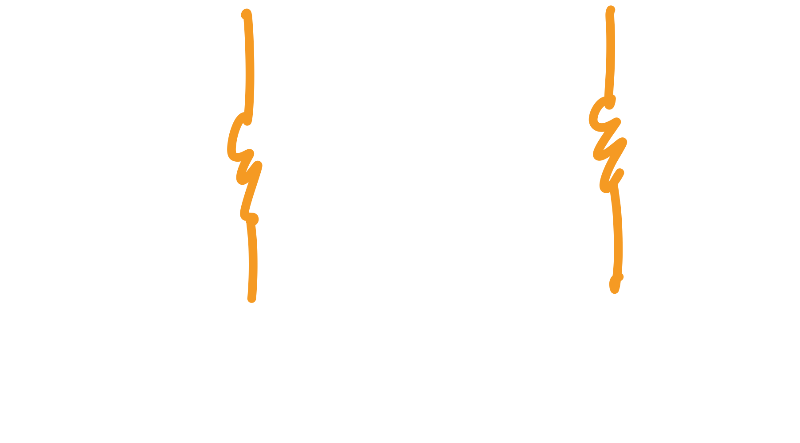 In una configurazione in parallelo, le molle sono collegate allo stesso punto e agiscono contemporaneamente sulla stessa massa. Per avere un sistema equivalente semplice, è necessario che le molle abbiano la stessa lunghezza a riposo .
Consideriamo due molle con costanti elastiche e collegate in parallelo a una massa. Quando la massa si sposta di una quantità , entrambe le molle subiscono lo stesso allungamento. La forza totale esercitata dalle molle sulla massa è la somma delle forze esercitate da ciascuna molla: 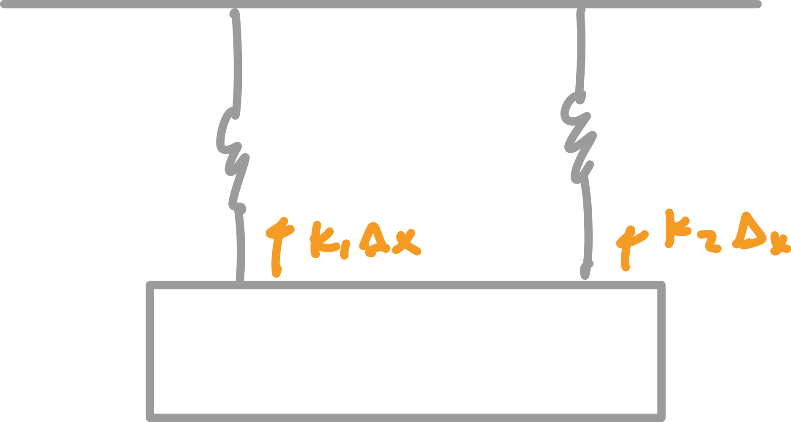
dove:
Quindi, la forza totale è:
Se consideriamo il sistema delle due molle in parallelo come un’unica molla equivalente con costante elastica , la forza totale sarebbe:
Uguagliando le due espressioni per , otteniamo la relazione per la costante elastica equivalente di molle in parallelo:
In generale, per molle in parallelo con la stessa lunghezza a riposo, la costante elastica equivalente è data da:
Esercizio del Tema d’Esame (Esercizio 5)
Determinazione della Posizione di Equilibrio
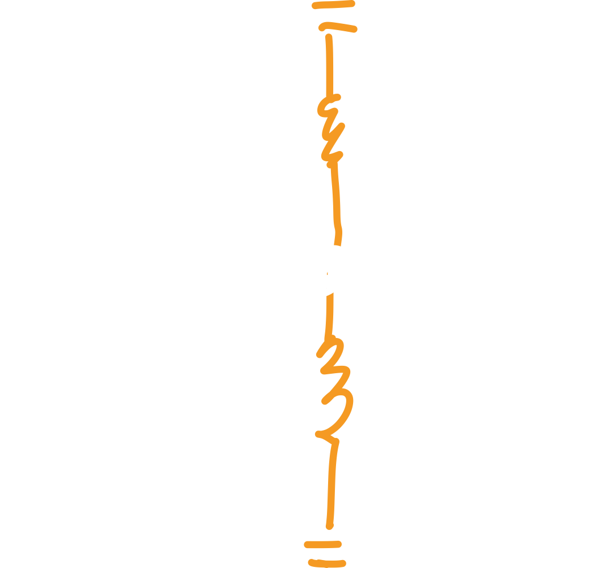 Il problema considera un sistema composto da due molle collegate a un soffitto e a una massa . La prima molla ha una costante elastica ed è collegata direttamente al soffitto. La seconda molla, con costante elastica , è collegata alla massa . Sia la quota del pavimento. Si vuole determinare la posizione di equilibrio verticale della massa .
Per trovare la posizione di equilibrio, è necessario imporre che la risultante delle forze agenti sulla massa sia nulla. Le forze in gioco sono: 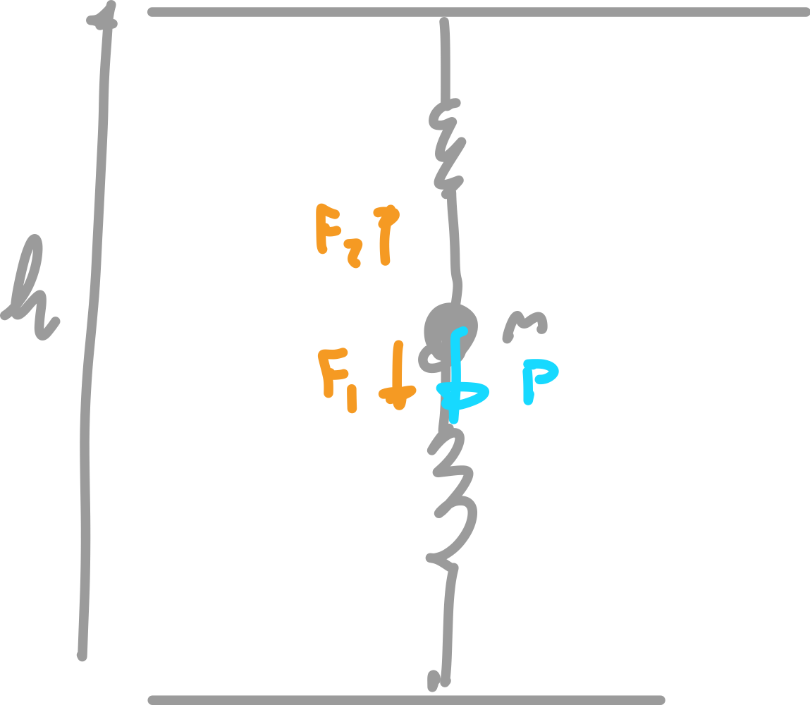
- La forza elastica della prima molla, , che agisce verso il basso. Dato che la lunghezza a riposo è considerata nulla (come suggerito dal professore), l’allungamento della prima molla è , quindi .
- La forza peso della massa , , che agisce verso il basso.
- La forza elastica della seconda molla, , che agisce verso l’alto. L’allungamento della seconda molla è , quindi .
All’equilibrio, la somma delle forze verso il basso deve essere uguale alla somma delle forze verso l’alto:
Sostituendo le espressioni delle forze elastiche, otteniamo:
Ora, risolviamo questa equazione per trovare :
Pertanto, la posizione di equilibrio è data da:
Sembra esserci stata una discrepanza con la formula fornita successivamente dal professore (). È importante seguire attentamente i passaggi logici per la derivazione. Riconsiderando l’equilibrio delle forze:
Forze verso il basso: , Forze verso l’alto:
Equilibrio:
La formula corretta, derivata dai principi dell’equilibrio statico, è . La formula fornita in seguito dal professore in sembra contenere un errore di segno per il termine .
Analisi dello Spostamento Orizzontale e Mantenimento dell’Equilibrio Verticale
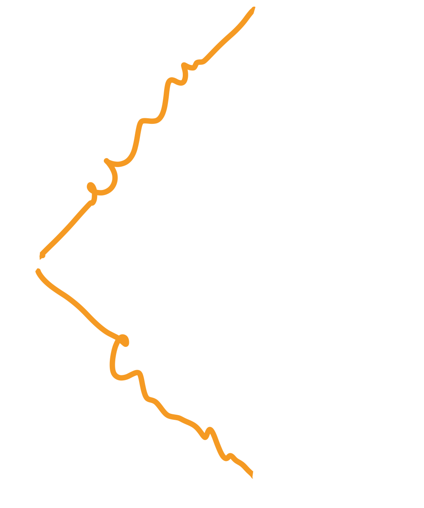 Il professore introduce poi uno spostamento orizzontale della massa mantenendo la stessa quota verticale. In questo scenario, le molle diventano oblique. Tuttavia, per piccole oscillazioni orizzontali e considerando l’equilibrio verticale, l’allungamento verticale di ciascuna molla rimane approssimativamente lo stesso.
Come spiegato dal professore, una molla obliqua può essere scomposta in una forza verticale () e una forza orizzontale (). L’allungamento verticale determina la forza verticale secondo la relazione , dove è l’elongazione verticale.
Se la massa viene spostata orizzontalmente mantenendo la stessa quota verticale, l’elongazione verticale di ciascuna molla non cambia (per piccole oscillazioni). Di conseguenza, le forze verticali esercitate dalle molle rimangono le stesse di quando il sistema era in equilibrio verticale. Pertanto, il sistema rimane in equilibrio nella direzione verticale anche quando la massa viene spostata orizzontalmente a quella quota.
Determinazione della Velocità Angolare in Caso di Rotazione
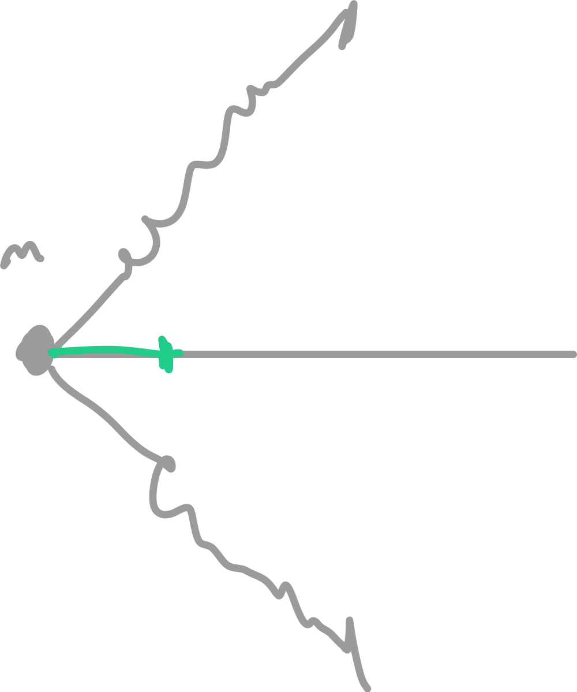 Se il sistema viene fatto ruotare in un piano orizzontale attorno alla posizione di equilibrio verticale, la massa sarà soggetta a un’accelerazione centripeta diretta verso il centro della rotazione (la proiezione verticale del punto di attacco delle molle).
La forza centripeta () necessaria per mantenere la massa in rotazione con velocità angolare a un raggio (lo spostamento orizzontale) è data da:
Questa forza centripeta è fornita dalle componenti orizzontali delle forze elastiche delle due molle. Dato che le lunghezze a riposo delle molle sono nulle, le forze elastiche sono direttamente proporzionali all’allungamento. Per un piccolo spostamento orizzontale , anche le componenti orizzontali delle forze elastiche saranno proporzionali a :
- La componente orizzontale della forza della prima molla è .
- La componente orizzontale della forza della seconda molla è .
Entrambe queste forze orizzontali agiscono come forze di richiamo verso la posizione di equilibrio orizzontale e quindi contribuiscono alla forza centripeta:
Eguagliando le due espressioni per la forza centripeta:
Se (c’è una rotazione), possiamo dividere per :
Risolvendo per la velocità angolare :
Questa è l’espressione per la velocità angolare del sistema in rotazione orizzontale. Il professore ha correttamente derivato questa formula nel passaggio finale.
In sintesi, l’esercizio analizza l’equilibrio statico verticale di un sistema con due molle e una massa, per poi considerare il comportamento del sistema quando la massa viene spostata orizzontalmente e fatta ruotare, evidenziando come le forze elastiche determinano la velocità angolare della rotazione. È fondamentale notare la potenziale imprecisione nella formula per la posizione di equilibrio fornita oralmente dal professore e fare riferimento alla derivazione basata sull’equilibrio delle forze.